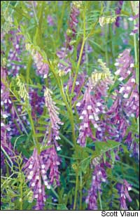
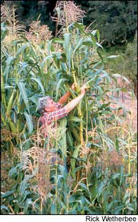

Succulent Sweet Corn
June/July 2005
Issue # 210 - June/July 2005
By Barbara Pleasant
Fresh sweet corn is one of summer’s culinary treats, whether it’s sautéed, souffléed or boiled on the cob. It’s not difficult to grow, provided you have a block of fertile soil at least 10 feet long and 6 feet wide. Or you can buy fresh-picked ears from small growers at your local farmer’s markets.
Zea mays var. rugosa, which is what we call “sweet corn,” was enjoyed by many Native American tribes as “green corn.” The earliest versions were immature grain corns, picked before the sugars in the kernels converted to starch. Newer varieties were selected for sweetness, and by the beginning of the 20th century, sweet corn had become a distinct and beloved vegetable. You can still grow trail-blazing heirloom varieties such as ‘Country Gentleman’ (1891), pictured on Page 59, and ‘Golden Bantam’ (1902), on Page 60, or you can opt for modern hybrids that hold their sugars for weeks instead of days.
Sweet corn varies in color less than grain corn, and though there are a few brightly colored exceptions - ‘Ruby Queen’ is red! - most sweet corn varieties have white or yellow kernels, or a combination of both. And, if you have the space, you can enjoy fresh corn on the cob for more than a month by growing early, midseason and late-maturing varieties.
Growing terrific sweet corn requires a little advance planning. For starters, corn produces best when it is planted in rectangular blocks rather than straight rows, because the best pollination occurs when the wind blows pollen from the tassels at the tops of the plants over the silks that emerge from the tips of the ears. You can hand-pollinate corn by sprinkling pinches of pollen onto the silks, but letting nature handle this task is far simpler, and it’s easily accomplished by planting at least three closely spaced rows. Five rows or more is even better.
Then there is the challenge of providing sufficient fertilizer. “The plants are heavy feeders. They take a lot out of the soil, so you need the means to put that fertility back,” says Henry Brockman, who grows 10 acres of organic vegetables in Congerville, Ill. He prepares soil for sweet corn with a cover crop of hairy vetch (see “Why Hairy Vetch is Good for Gardens,” at left), but you can use any nitrogen- fixing legume. You also can amend the soil with manure, or use compost (for micronutrients) and an organic fertilizer such as Sustane 4-6-4, Harmony 5-5-3 or a similar locally available product.
Years ago, a gardener told me how he grew “no work” sweet corn by cultivating the soil in the fall and then covering it with a 3-inch layer of chicken manure. By spring, the manure had weathered into a weed-deterring crust, and the soil was rich with nitrogen. All he had to do was poke corn kernels into it and stand back. I tried his method and found that it worked, though I suggest planning a short fall vacation to escape the manure smell.
Organic fertilizers are a great match for corn because they become more available to roots as soil temperatures rise, and corn needs more nitrogen as summer progresses. Recent research at Michigan State University showed that corn uses only about 6 percent of its total nitrogen in its first month, 25 percent as it grows from knee-high to tassel, 25 percent during the pollination period and a whopping 39 percent as the ears are developing. Young plants that are not getting enough nitrogen are pale and spindly; older nutrient-starved plants produce small, sparse ears with lots of shriveled kernels near the tips.
If you’re worried about your crop’s nutritional status, hoe early and often to reduce competition from weeds, and top-dress the rows with a half-ration of any good organic fertilizer as soon as the tassels appear. A thorough drench with a foliar fertilizer, such as one made from fish byproducts and kelp, can help your corn get adequate nutrients, too.
Finally, corn requires a steady supply of water, so plan from the outset to provide water if needed. “In most soils, maturing sweet corn needs 1 to 1½ inches of water per week,” says Jeanine Davis, Extension horticulture specialist at North Carolina State University.avis says the timing of moisture is crucial for sweet corn during the critical period between tasseling and maturity.
Climate-friendly Sweet Corn
With site, soil and water considerations nailed down, it’s time to choose your varieties. Historic open-pollinated (OP) varieties - and new ones, such as bicolored ‘Double Standard’ - tend to be big, robust plants with ears that won’t ripen all at once. You’ll need to check almost-ripe ears daily, and harvest and cook them the same day you pick them, because OP corns quickly convert their sugars to starch. “These days growers are getting into hot debates about OP versus hybrid sweet corn,” Davis says, “and many say that OP is not an issue when corn is being eaten fast.” Still, the vast majority of gardeners - and organic farmers - choose hybrids because of their earliness, vigor and, most of all, their ability to hold sugars for several days after they reach perfect ripeness.
You’ll find plenty of sweet corn choices in any seed catalog. Hybrid varieties offer three different levels of sweetness. “Normal sugary” (su) varieties include yellow ‘Early Sunglow’ and white ‘Silver Queen.’ “Sugary enhanced” (se) varieties include yellow ‘Incredible’ (a top producer in Oklahoma State University trials), bicolored ‘Ambrosia’ (a top producer in Ohio State University trials) and white ‘Argent,’ which has tight husks that help it resist earworms (keep reading), and which many folks say tastes as good as ‘Silver Queen.’ “Super sweet” (sh2) varieties include ‘Frontier’ and ‘Even Sweeter,’ but the super sweets have some drawbacks: The seeds are harder to handle (they tend to rot unless soil conditions are perfect), the planting must be isolated from other types of corn to prevent cross-pollination and many people find their flavor too sweet, with so much sugar you can hardly taste the corn.
During the 20 years or so these hybrids have been available, the se varieties have won the most fans. “They’re sweet, but they still taste like corn,” Brockman says. Se hybrids stay in good condition on or off the plants for several days, or more than a week if the weather’s not too hot. There are dozens of varieties, varying in color and time to maturity. If you live in a cool climate, you’ll need a fast-maturing variety such as 65-day yellow ‘Sugar Buns’ or ‘Kandy Kwik,’ which tend to be small plants that can be grown at tight, 6-inch spacing. Midseason varieties such as ‘Luscious’ bicolor (and the se varieties named above) mature in 75 to 85 days; most midseason varieties will produce two ears per plant when thinned to 8 to 10 inches apart. Late-maturing 90-day sweet corns such as ‘Silver Queen’ and most heirloom varieties need 14-inch spacing. These late varieties develop big ears studded with wonderfully flavorful kernels, but you are likely to see quite a few corn earworms in the tips of any corn that matures in August.
An Earworm Education
Earworms are the larvae of a night-flying moth that lays its eggs in corn silks. When the eggs hatch, the larvae squirm to the tip of the ear, where they begin feeding on the tip kernels. Corn varieties with tight husks that extend past the tip offer some protection, or you can take some advice from the University of Vermont’s Extension Service and pop a clothespin onto the tips of ears as soon as the silks begin to brown.
Ruth Hazzard, a vegetable entomologist at the University of Massachusetts, leads an Extension vegetable program that has perfected another earworm- prevention technique - applying oil mixed with the bacterium Bacillus thuringiensis, or Bt, to corn silks. A handy pump applicator called the Zea-later also was invented to speed the process. (The scientific name for corn earworms is Helicoverpa zea.) Or, you can go low tech and use an eye-dropper, oil can or detergent spray bottle to squirt a mixture of corn oil and Bt mixed with water and a little soap into the tip of each ear about five days after the silks emerge, just as they have begun to detach from the kernels.
The oil or oil/Bt treatment will smother or kill young earworms, but it’s time-consuming and it won’t give you great control if you have a serious earworm infestation on your hands.
Many gardeners prefer to coexist peaceably with the little critters, while large-scale growers often resort to heavy spraying with pesticides or growing genetically modified (GM) varieties of corn. These are varieties that have been “engineered” with genes that kill corn earworms by placing Bt toxin directly into the plants’ tissues and with other genes that make sweet corn tolerate herbicides.
GM sweet corn varieties are starting to make their way into grocery stores, and, unfortunately, federal law does not yet require GM foods to be labeled. Scientists at Pennsylvania State University estimate that GM varieties account for about 3 percent of sweet corn, while the U.S.epartment of Agriculture reports that about 45 percent of grain corn grown in the United States is from GM varieties. All this effort is being expended to get rid of a few earworms, which are easy to remove simply by breaking off the tips of the corn as you shuck the ears. Organic market growers who sell directly to corn lovers typically educate their customers to the fact that earworms are part of the package with organically grown sweet corn. If you’re concerned about pesticide and genetic engineering issues, finding a few earworms in your purchased sweet corn is a reassuring sign.
Tastes of Summer
Sweet corn is ready to pick when the kernels become plump and glossy; the best way to gauge ripeness is to taste a sample ear. If you open one too soon and want to give it a few more days, pull the shucks back on and secure them with a rubber band, or cover the ear with a paper bag. Either method will safeguard the maturing ear from hot sun and provide protection from birds that may be waiting to take a share of your crop.
Purists love boiled corn on the cob with a little butter and salt, but grilled corn seasoned with cumin, chili powder and a light slather of sour cream tastes great, too. Sweet corn freezes like a dream, either on or off the cob, and it’s the best way to preserve the sweetness of the ears if you aren’t able to eat them right away.
“I think my favorite way to eat sweet corn is in the winter,” Brockman says. “Frozen corn still tastes like summer.”
Folks often check for earworms and then bag up unshucked ears and throw them in the freezer, but cutting the kernels from the cobs saves lots of freezer space. Always blanch the ears before you cut off the kernels. If you want your kernels to be packed loose like supermarket corn, spread out the kernels on a cookie sheet and pop it into the freezer. Then pack frozen kernels into freezer bags. For a creamier version, cut the kernels off raw, and then use a spoon to scrape the “milk” off the cobs. Heat the mixture barely to a boil, let it cool and freeze it fast for a great taste of summer that will keep for a year.
Barbara Pleasant is a veteran Mother Earth News contributing editor and award-winning book author. At her request, the organic grower at her local tailgate market has stopped apologizing for the earworms in his delicious sweet corn.
Why Hairy Vetch is Good for Gardens
Cover crops don’t usually make headlines, but even with a clunky name like “hairy vetch,” Vicia villosa has gotten the attention of vegetable growers - and other gardeners - from New York to California. A legume that’s often winter hardy to Zone 5, hairy vetch can add 60 to 120 pounds of nitrogen per acre to soil. Let it grow until it just begins to flower, then you can cut it down. Let the vinelike foliage dry into a mat and plant vegetables into the pre-fertilized, pre-mulched site.
For 15 years, researchers at the U.S.epartment of Agriculture’s Sustainable Agricultural Systems Laboratory in Beltsville, Md., have been growing tomatoes in hairy vetch mulch. They have found it increases yields, enhances nutrient uptake, improves disease resistance and frustrates Colorado potato beetles.
Other good crops to grow in hairy vetch mulch include pumpkins, bush beans and sweet corn, which requires about 150 pounds of nitrogen per acre. Many organic growers have found that a good stand of hairy vetch, or hairy vetch mixed with wheat or oats, planted in late summer and turned under in spring, can provide most of the nitrogen needed by corn. In central Illinois, organic grower Henry Brockman plants a mixture of hairy vetch and wheat all over his farm as space begins to open up in late summer. The following spring, he chooses where to plant his sweet corn by looking for the lushest stand of hairy vetch, which he turns over with a tractor-mounted tiller. “I chop it in rough, let it sit for at least a week, and then till it one more time before I plant,” he says. “Corn has large seeds, so it will germinate all right even if there’s still a little rough stuff in the soil.”
To put hairy vetch to work on your land, here are some important guidelines for making a good crop:
Choose an appropriate hairy vetch variety. For Zones 6 to 9, Auburn University in Alabama has developed AU ‘EarlyCover’ and several other varieties that make remarkably rapid growth in spring. In colder winter climates, it’s best to go with common hairy vetch or ‘Madison,’ a hardy variety developed in Nebraska.
Plant at the right time. Hairy vetch doesn’t fix nitrogen when soil temperatures drop below 40 degrees, and it needs at least six to eight weeks of growing time before the first fall frost. In spring, it should be allowed to grow until two weeks before vegetables usually are planted.
Inoculate the seed. Vetch needs the same rhizobium (nitrogen-fixing bacteria) used by peas, which is a different strain from the one used by beans. Lightly dampen the seeds and toss them with the powdered inoculant before planting them one-half to 1 inch deep. Ideally, neither peas nor vetch should have been grown in the same location for five years, so it’s a good idea to rotate your crops.
Expect stragglers. A small percentage of the hairy vetch seeds you sow will not germinate until the following year. Hairy vetch is a good “weed” to have, but it may need trimming back should it threaten to shade out other plants in the garden.
Sweet Corn Pudding
This old-time pudding with sweet corn kernels enveloped in rich custard is as big a treat today as it must have been years ago. To remove kernels from a cob: Cut a small amount off the cob’s blunt end to make it straight across; place the squared-off blunt end down on a cutting board and then use a sharp knife to cut downward, removing the kernels. Serve as a side dish with red meat or poultry, or as a hearty lunch with a salad.
1 tablespoon butter
1 medium onion, finely chopped
3 cups of fresh sweet corn kernels
(7 to 8 plump ears)
2 cups whole milk
6 large eggs, slightly beaten
Dash nutmeg
Optional: 1 teaspoon sugar
Heat oven to 350 degrees. In a small nonstick pan, melt the butter over medium heat. Sauté the onion until it is translucent, about 7 minutes.
In a large bowl add the onion, corn, milk, eggs, nutmeg (and sugar if using) and mix well. Pour the mixture into a 9-inch casserole or small pottery pie dish. Bake for 1 hour, or until lightly browned and a knife inserted halfway into the center comes out clean. Serves 6 as a side dish.
- From The Edible Heirloom Garden
by Rosalind Creasy
 Lynn Karlin Hairy vetch, an adaptable nitrogen-fixing legume, is king of the cover crops. |
 Scott Vlaun The corny sweetness of the 1891 heirloom ‘Country Gentleman’ has stood the test of time. |
David Cavagnaro Harvesting ears as soon as they are ripe is the best way to enjoy their natural sweetness. |
|
 Rick Wetherbee Eating fresh corn - blanched ears of ‘Golden Bantam’ corn, ready for freezing, share the table with a dinner of creamed corn soup. |
David Cavagnaro |
Rosalind Creasy |